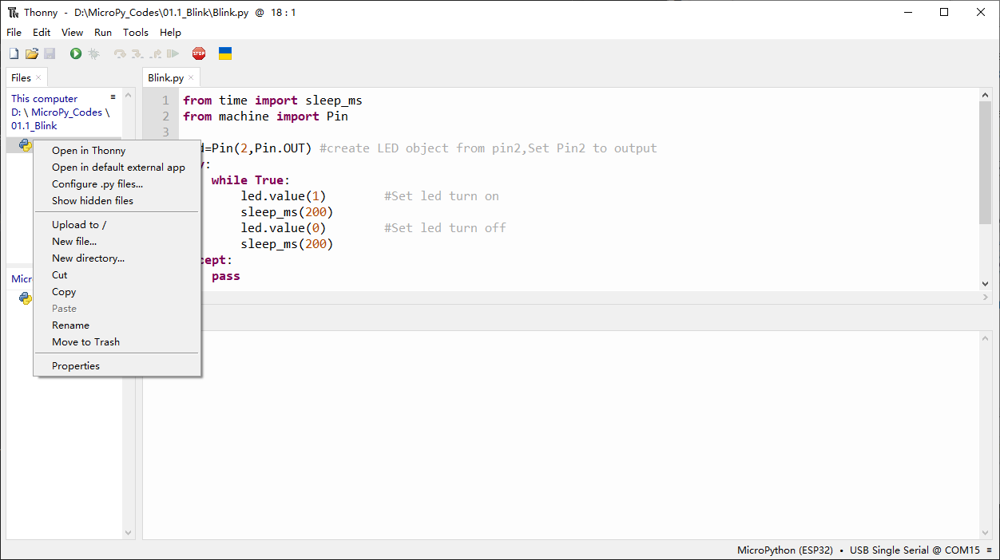
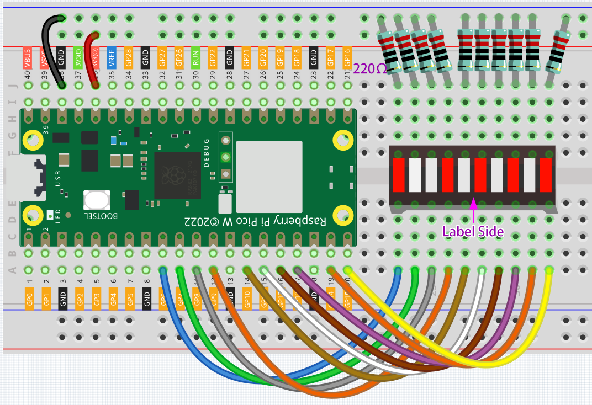

1.4 Analog & PWM
In previous study, we have known that one button has two states: pressed and released, and LED has lighton/off state, then how to enter a middle state? How to output an intermediate state to let LED “semi bright”? That’s what we’re going to learn. First, let’s learn how to control the brightness of a LED.
Meteor Flowing Light
After learning about PWM, we can use it to control LED bar graph and realize a cooler flowing light. The component list, circuit, and hardware are exactly cons istent with the project Flowing Light.
Component List
Raspberry Pi Pico W x1
MicroUSB cable x1
830 Tie-Points Breadboard x1
Resistor 220Ω x10
Jumper Wire Several
LED Bar Graph x1
Schematic
This project has the same circuit as Project 1.3, but the output signal is different. In Project 1.3, high and low voltage levels (0 & 1) are directly output to turn the LEDs on or off. In this project, PWM signals are output to control the brightness of the LED Bar Graph, achieving a flowing effect.
Connect
Code
Note
Open the
1.4_analog&pwm.pyfile under the path ofSuper-Starter-Kit-for-Pico\Python\1.Projector copy this code into Thonny, then click “Run Current Script” or simply press F5 to run it.Don’t forget to click on the “MicroPython (Raspberry Pi Pico)” interpreter in the bottom right corner.
Click “Run current script”, the LED Bar Graph will continuously flow from left to right.
The following is the program code:
import machine
import utime
pin_nums = [6, 7, 8, 9, 10, 11, 12, 13, 14, 15]
pins = [machine.Pin(p, machine.Pin.OUT) for p in pin_nums]
pwms = [machine.PWM(pin, freq=1000) for pin in pins]
MAX_DUTY = 65535
steps = 32
breath_pattern = []
for i in range(steps):
duty = int(MAX_DUTY * (1 - abs((i - steps/2)/(steps/2))))
breath_pattern.append(duty)
def cleanup():
for pwm in pwms:
pwm.deinit()
try:
while True:
for step in range(steps):
for i, pwm in enumerate(pwms):
phase = (step - i * 2) % steps
pwm.duty_u16(breath_pattern[phase])
utime.sleep_ms(50)
except KeyboardInterrupt:
cleanup()